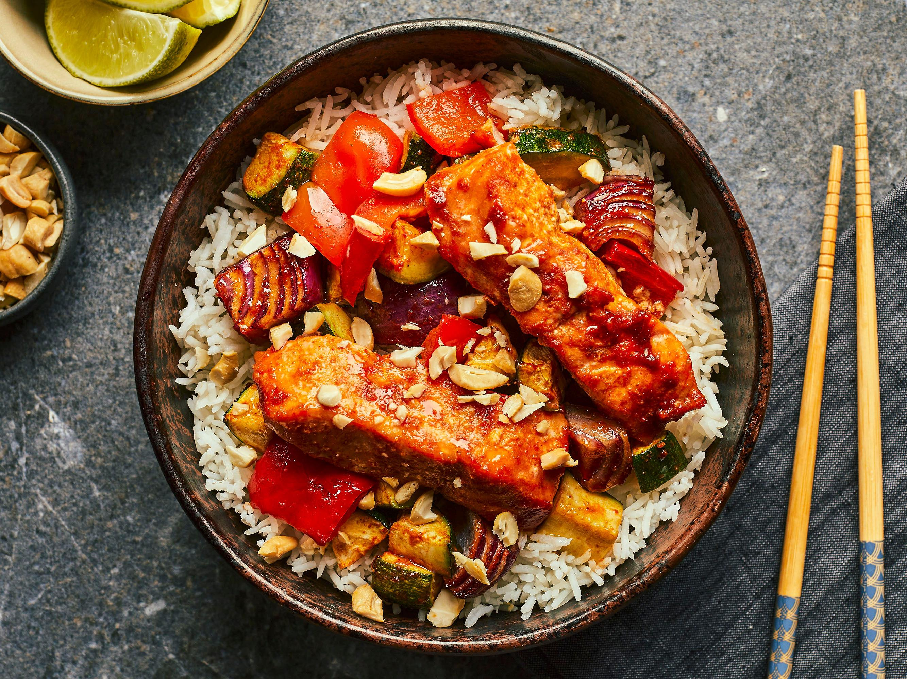

Bol-repas au saumon asiatique – Asie (inspiré Japon/Corée)
Ingrédients :
- 1 pavé de saumon (150-200 g)
- 2 cuillères à soupe de sauce soja
- 1 cuillère à soupe de miel ou sirop d’érable
- 1 cuillère à soupe d’huile de sésame
- 1 cuillère à soupe de vinaigre de riz
- 1 gousse d’ail émincée
- 1 cuillère à café de gingembre râpé
- Riz cuit (blanc ou complet)
- Légumes au choix : concombre, carotte râpée, edamame, chou rouge
- Graines de sésame, oignons verts pour décorer
Instructions :
- Mélanger sauce soja, miel, huile de sésame, vinaigre, ail et gingembre.
- Mariner le saumon 15 min dans cette sauce.
- Cuire le saumon à la poêle ou au four jusqu’à ce qu’il soit doré.
- Dans un bol, disposer du riz, des légumes frais, puis le saumon.
- Napper avec la sauce restante, parsemer de graines de sésame et oignons verts.
- Déguster tiède ou froid !